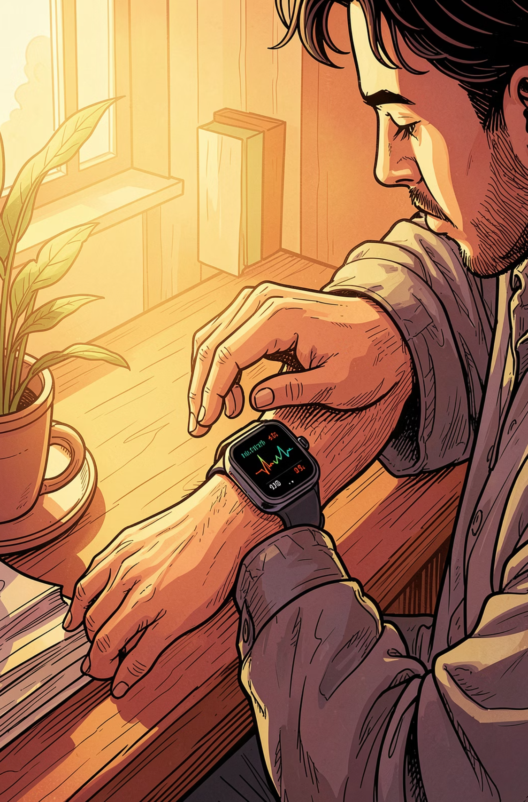
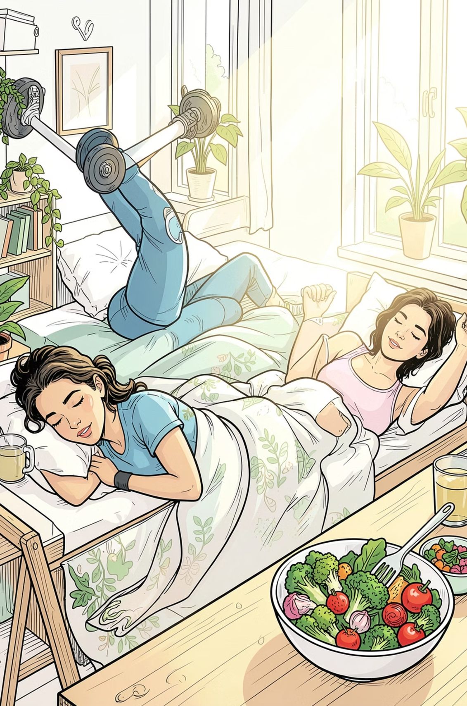
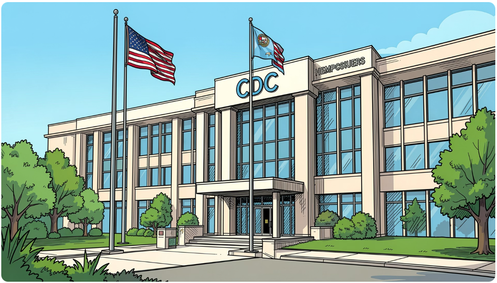
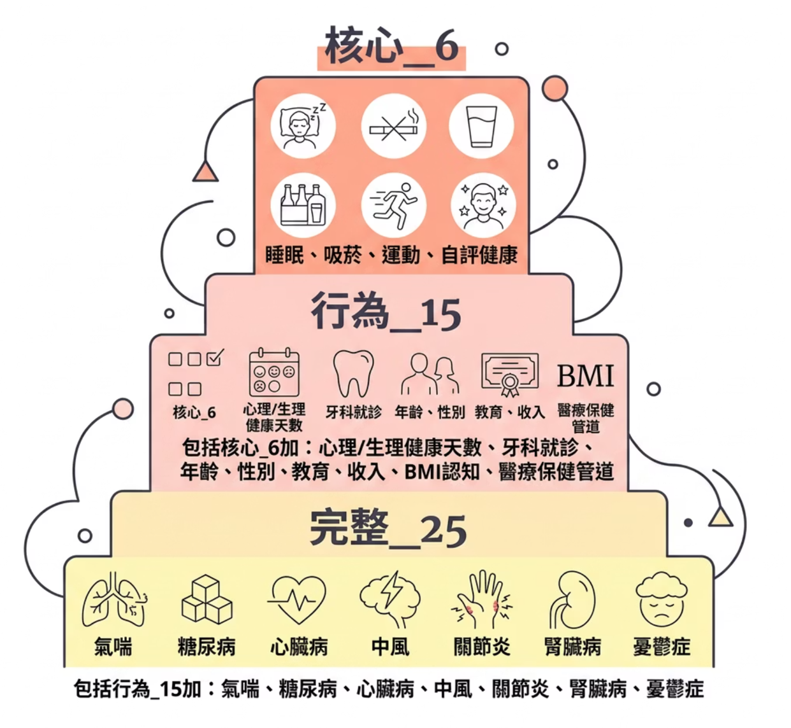
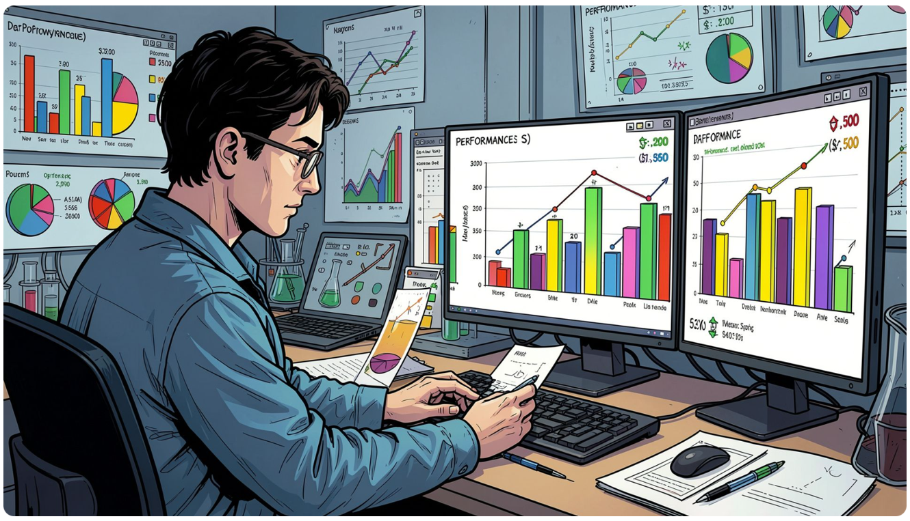
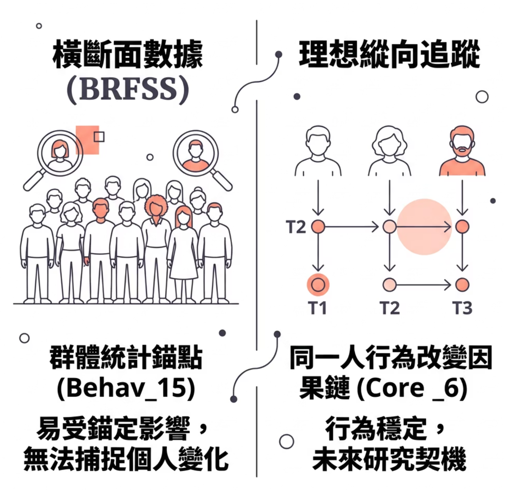
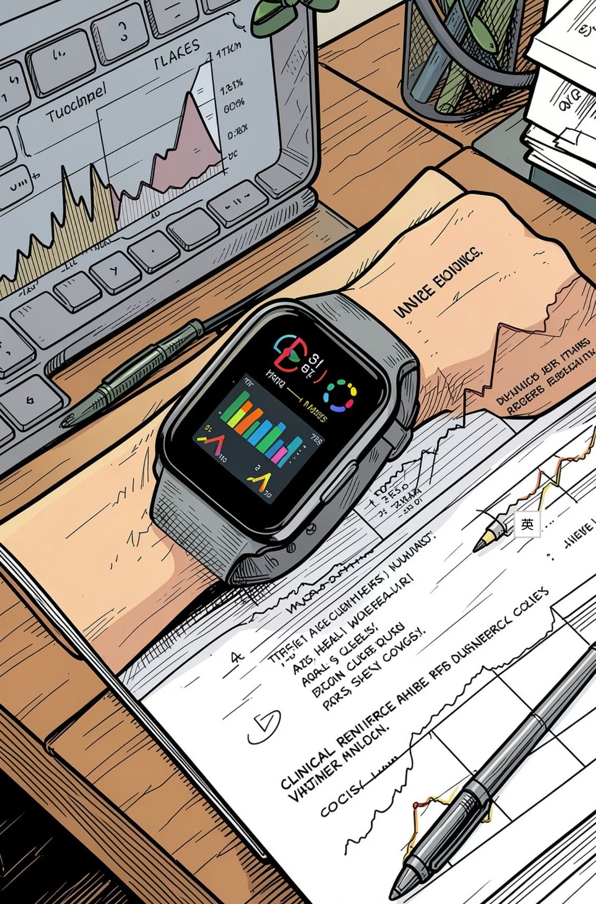

| 版本 | 資料集 | 規模 | 為何放棄 / 採用 |
|---|---|---|---|
| v1 | Lifestyle and Wellbeing Data | 15,972 × 24 | ❌ 資料不足 |
| v2 | Obesity Risk Dataset（Playground S4E2） | 20,800 × 17 | ❌ 合成放大資料、BMI 邊界不符 WHO 標準 |
| v3 | Heart Disease（heart_2020_cleaned） | 319,795 × 18 | ❌ 第三方清洗僅 18 欄、2020 疫情年、無睡眠 |
| v4 ✅ | CDC BRFSS 2022 原始 XPT | 445k → 329k | ✅ 官方原始、328 變數可選、含睡眠 |




